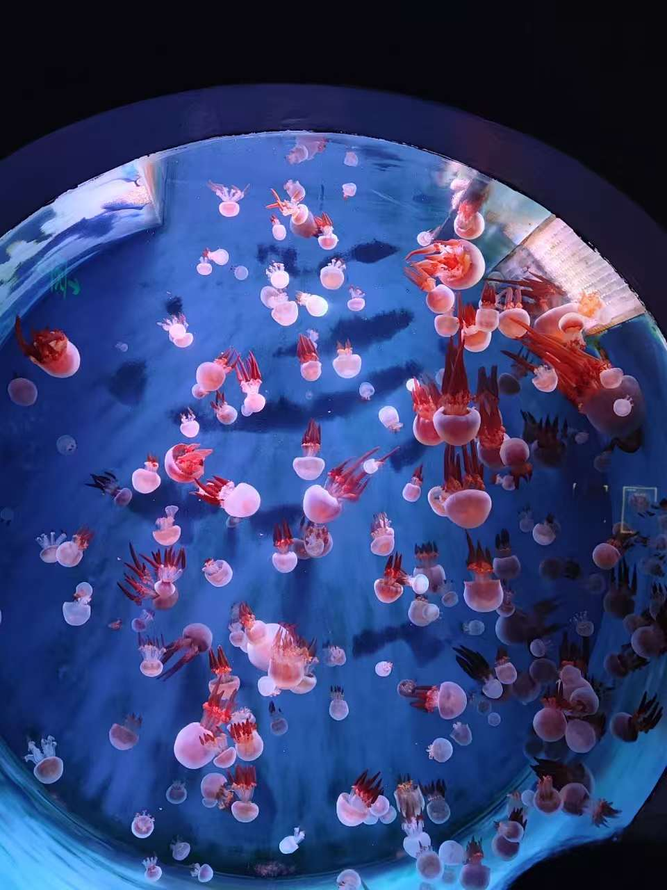
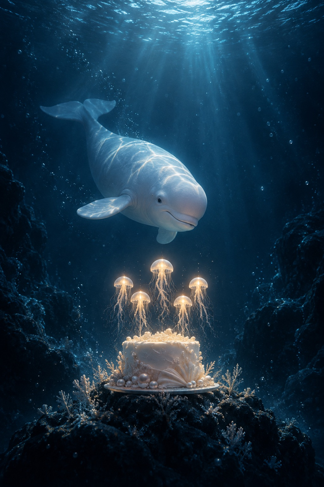
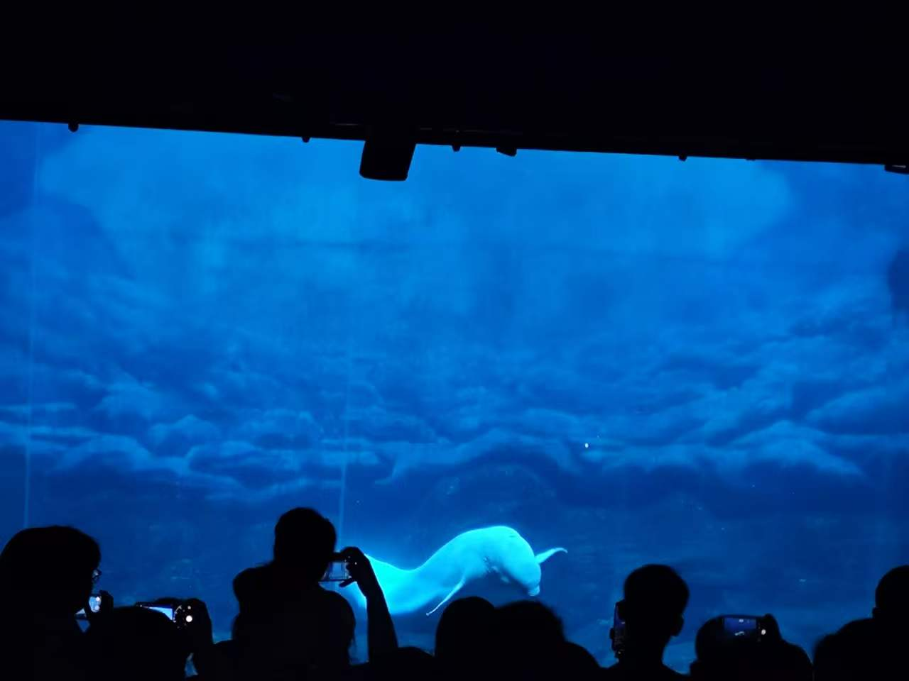
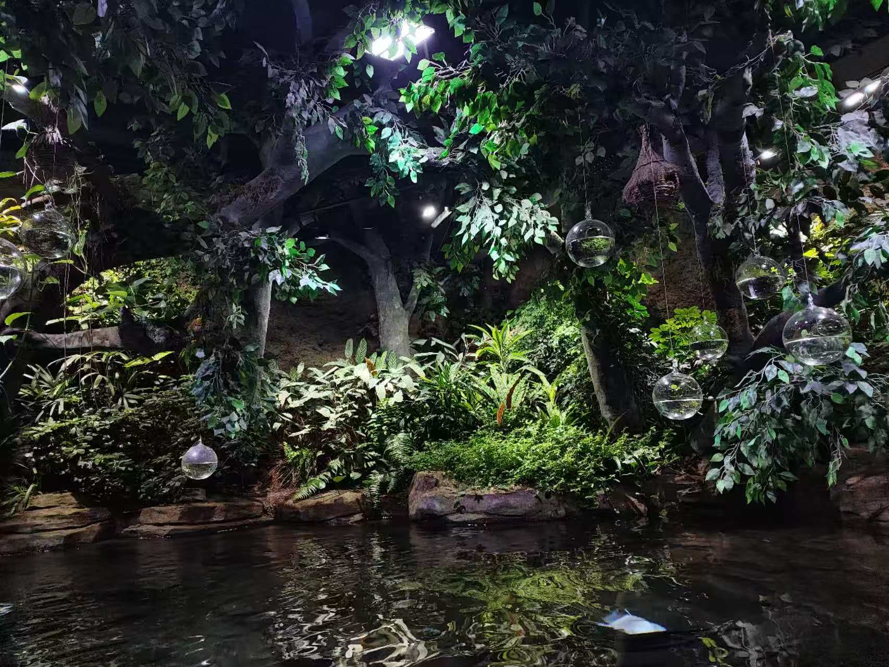
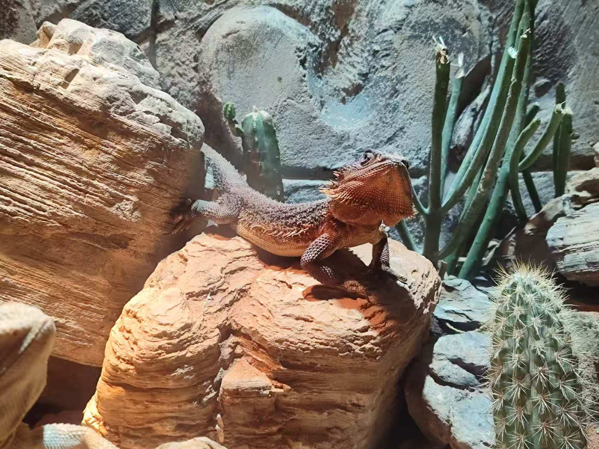
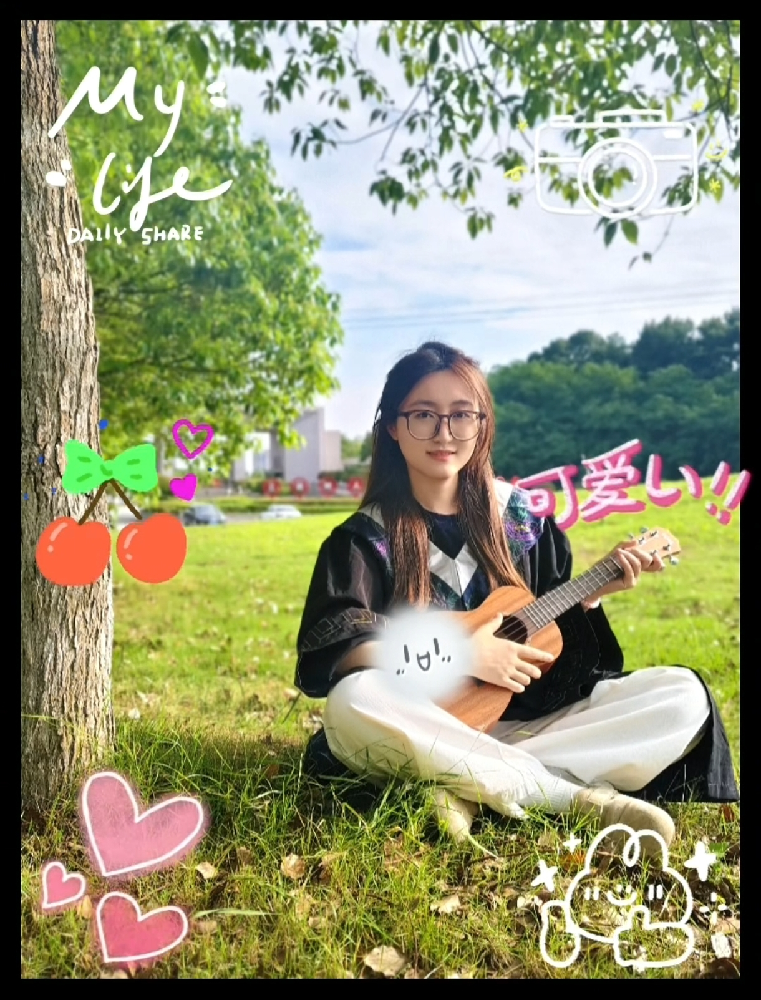

那天的蓝色，从这里开始。
AQUARIUM / 01
像一场漂浮的烟花
水母在光里慢慢升起。我们站在玻璃外面，看它们把整个水族箱变成一小片星空。

A BIRTHDAY INVITATION · 2026
农历九月十九
距离她的生日还有
ONE HAPPY DAY
没有非要记住的某个瞬间。只是一路走走看看、随便聊天，原本普通的一天，也就这样被好好保存了下来。

那天的蓝色，从这里开始。
AQUARIUM / 01
水母在光里慢慢升起。我们站在玻璃外面，看它们把整个水族箱变成一小片星空。

白鲸从人群前游过。
AQUARIUM / 02
隔着深蓝色的水和一排举起的相机，它还是游到了眼前。现在，它也赶来参加这场生日。

一路走走看看。
AQUARIUM / 03
树叶、流水和悬在半空的光球，让水族馆里又多了一个意外的小世界。

还有认真晒太阳的它。
AQUARIUM / 04
后来想想，开心大概就是这样：没有特别安排，却总有值得停下来多看一眼的东西。
MAKE FIVE LITTLE WISHES
依次轻触每一只水母。全部亮起后，生日歌和最后一份礼物就会出现。
生日烛光已经全部亮起

HAPPY BIRTHDAY, JIAYIN
A LETTER FOR YOUR NEW YEAR
后来再翻到这些照片，才发现那天留在记忆里的，不只是水母、白鲸和一路见到的动物，还有边走边聊时那种很轻松的感觉。原本只是一次普通的出游，因为同行的人不同，也就成了值得记住的一天。
你安静、温柔，也一直有自己的想法。希望新一岁的你，可以自由地走自己想走的路，拥有很多简单的快乐；也希望你的善良总能得到温柔的回应，期待的事情都慢慢传来好消息。
生日快乐。
逐星